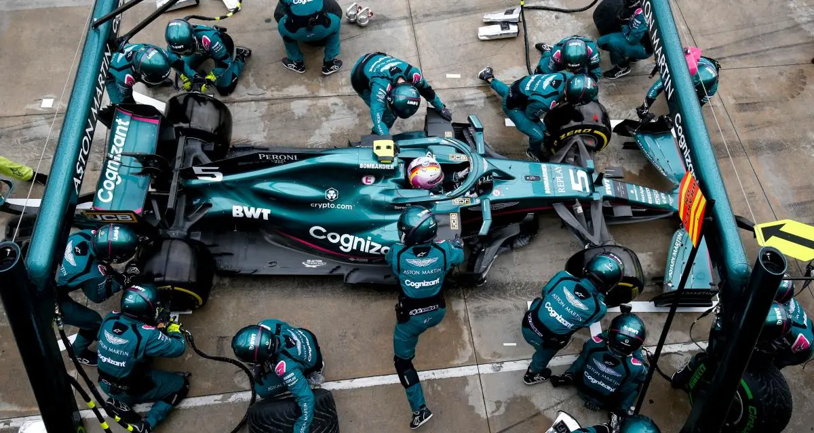
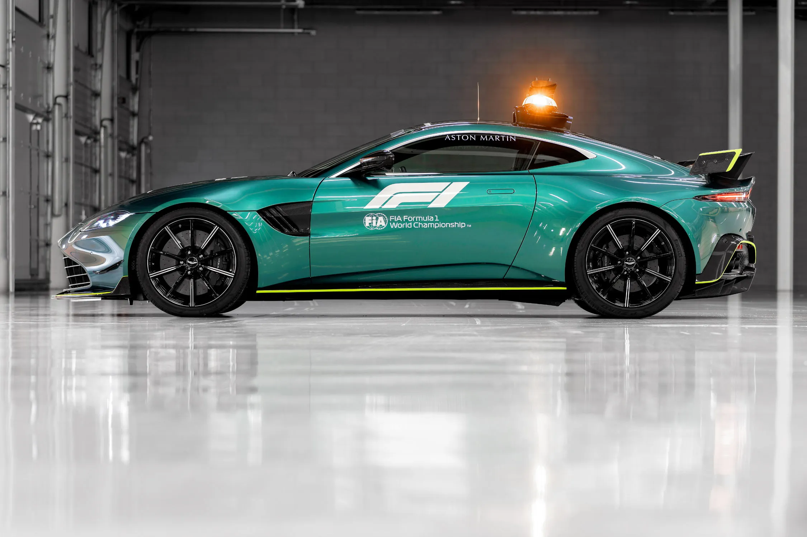
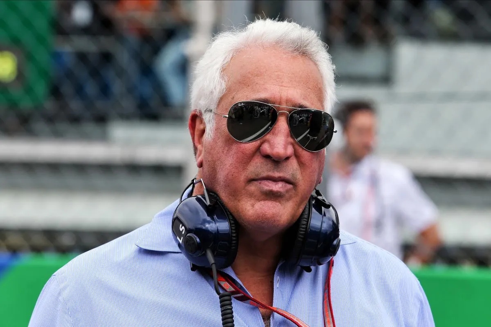
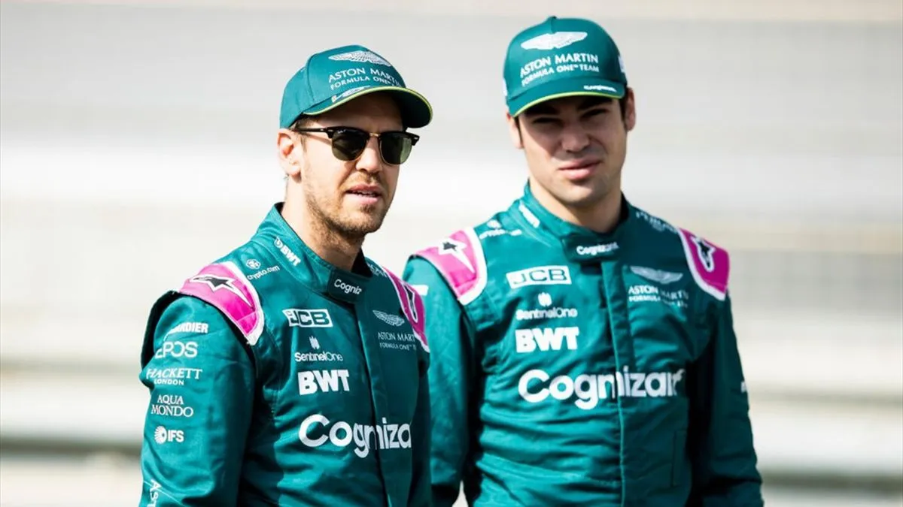

Intensity Driven
Ensemble aujourd'hui
Aston Martin F1 Team.
Engagée en 1959 et 1960 sous la dénomination David Brown Corporation, l'équipe fait son retour dans le championnat en 2021, après les rachats de l'entreprise Aston Martin et de l'écurie Racing Point F1 Team par Lawrence Stroll, qui renomme cette structure de course. Le premier podium dans l'histoire de cette écurie est obtenu par Sebastian Vettel, deuxième du Grand Prix d'Azerbaïdjan le 6 juin 2021.
contactez nousLes articles.
A la une



